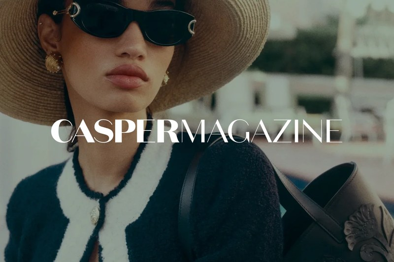
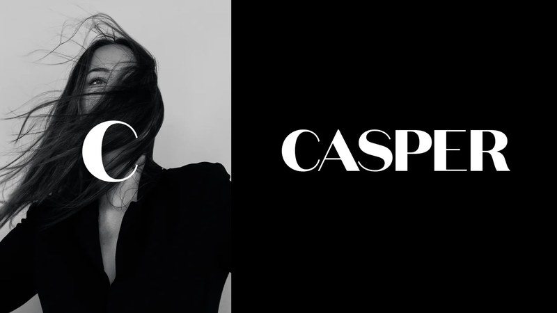
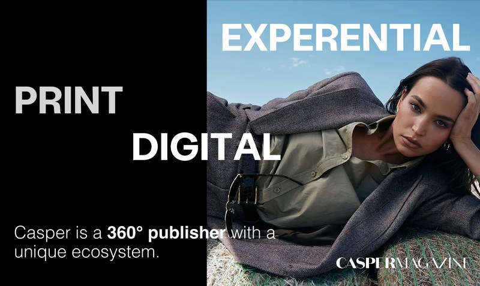
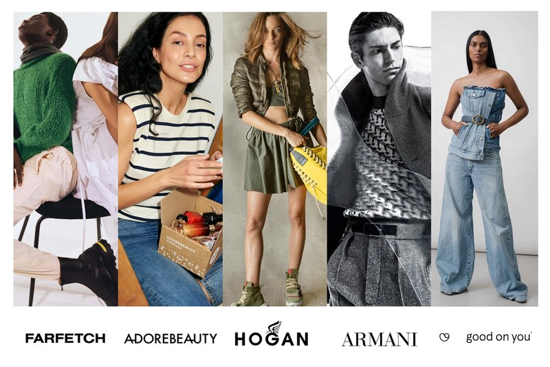
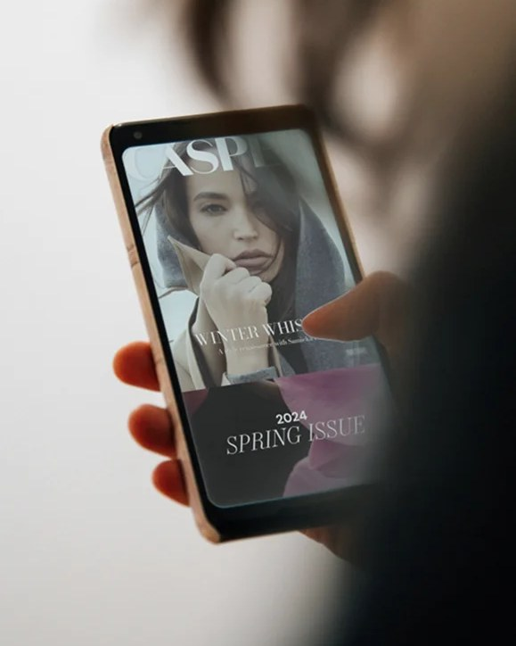

Casper Magazine
B2B Go-to-Market Strategy | Commercial Product Development | Brand Partnerships & Digital Publishing
Building the commercial foundations of an independent digital publication

The brief
Casper Magazine is an independent Melbourne publication covering fashion, beauty, wellness, design and culture, founded by its Editor-in-Chief, Maria Ugrinovski. It had a clear editorial voice and an engaged audience. To grow into a commercial digital publication, it needed a structured offer that advertisers could understand and buy, without compromising its editorial identity.
Our approach
- Research. A review of comparable publications and how they package advertising and partnerships.
- Commercial offer. A tiered package of digital placements, sponsored content, editorial collaborations and brand partnerships.
- Media kit. The offer redesigned into a professional business development tool.
- Brand and digital. Positioning, visual identity, website and editorial communications.
- Partnerships and operations. Prospective advertisers, brand collaborations and new project management systems.

My contribution
As Account Director, I worked directly with Maria. I conducted the competitor research and, from it, developed the foundations of Casper's tiered advertising and content offering. I prepared and presented it to Maria, working with Antimony's Chief Strategist, who helped refine and approve the direction.
I led the media kit redevelopment, helped progress business-to-business partnerships and introduced project management systems that improved workflow across the engagement.


Services & deliverables
- Competitor and market research
- Tiered advertising and partnership offering
- Media kit strategy, content and design
- Brand identity and website
- Business development and partnerships
- Project management systems

Outcome
A clear advertising structure and media kit gave Casper a professional way to present its audience and opportunities, supporting new advertising avenues, brand collaborations and business-to-business partnerships.
- 92% more website sessions
- 140% more member sign-ups
- 14 brand partner meetings
Antimony Studio reported a 92% increase in website sessions and a 75% increase in organic search traffic after the redesign, with member sign-ups up 140%. The advertiser pitch deck led to 14 meetings with prospective brand partners.